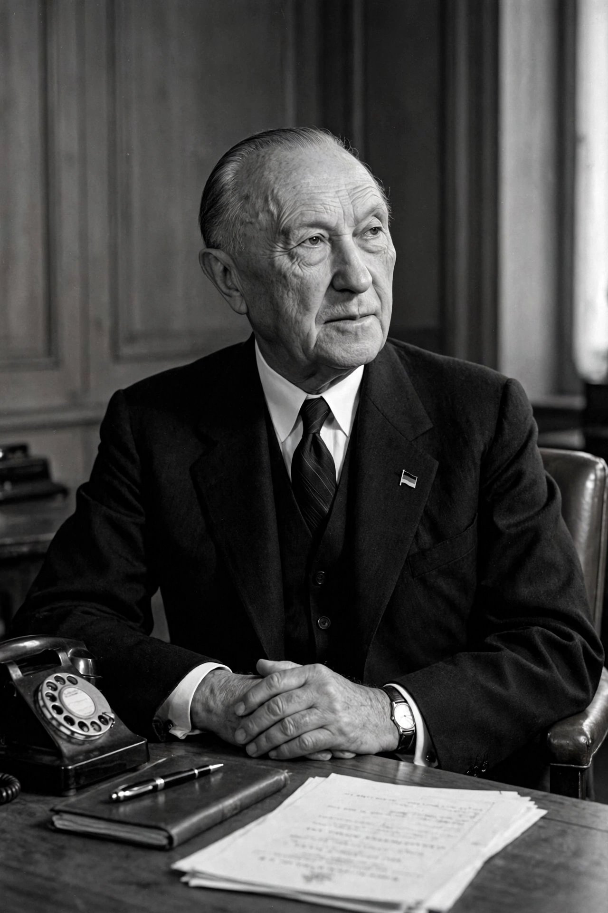

| Konrad Adenauer | |
|---|---|
| Born | 5 January 1876, Cologne, German Empire |
| Died | 19 April 1967 (aged 91), Rhöndorf, West Germany |
| Office | Chancellor of West Germany, 1949–1963 |
| Party | Centre Party; Christian Democratic Union (CDU) |
| Other offices | Mayor of Cologne (1917–1933); President of the Parliamentary Council (1948–49); Foreign Minister (1951–55) |
Konrad Hermann Joseph Adenauer (5 January 1876 – 19 April 1967) was a German statesman who served as the first Chancellor of the Federal Republic of Germany (West Germany) from 1949 to 1963. Aged 73 at his election, he was the oldest chancellor in German history and was nicknamed "Der Alte" ("the Old One"). A devout Catholic from the Rhineland, he led his country from the ruins of the Second World War to become a stable democracy and a prosperous ally of the West.
Adenauer was a leading politician of the Catholic Centre Party in the Weimar Republic, serving as Mayor of Cologne from 1917 to 1933 and as president of the Prussian State Council. The Nazis removed him from office in 1933; he withdrew to internal exile, living partly in hiding, and was imprisoned briefly after the 20 July 1944 plot against Hitler. After the war the American military government reinstated him as mayor of Cologne, before the British dismissed him; he then devoted himself to building the new Christian Democratic Union (CDU), which he led from 1946 to 1966. In 1948–49 he presided over the Parliamentary Council that drafted the Basic Law.
As chancellor, Adenauer pursued Westbindung — binding West Germany firmly to the Western alliance — above reunification on neutral terms. His government achieved the "economic miracle" (Wirtschaftswunder) under Economics Minister Ludwig Erhard, secured full sovereignty via the Paris Treaties (1955), joined NATO (1955), co-founded the European Coal and Steel Community and the European Economic Community (Treaty of Rome, 1957), and signed the Élysée Treaty of reconciliation with France (1963). He negotiated reparations and restitution agreements with Israel and Jewish organisations (Luxembourg Agreement, 1952) and, in 1955, won the release of the last German prisoners of war from the Soviet Union. His authoritarian style and the Spiegel affair of 1962 weakened him; he resigned in October 1963 in favour of Erhard. He died at his home in Rhöndorf in 1967 and was given a state funeral attended by world leaders.